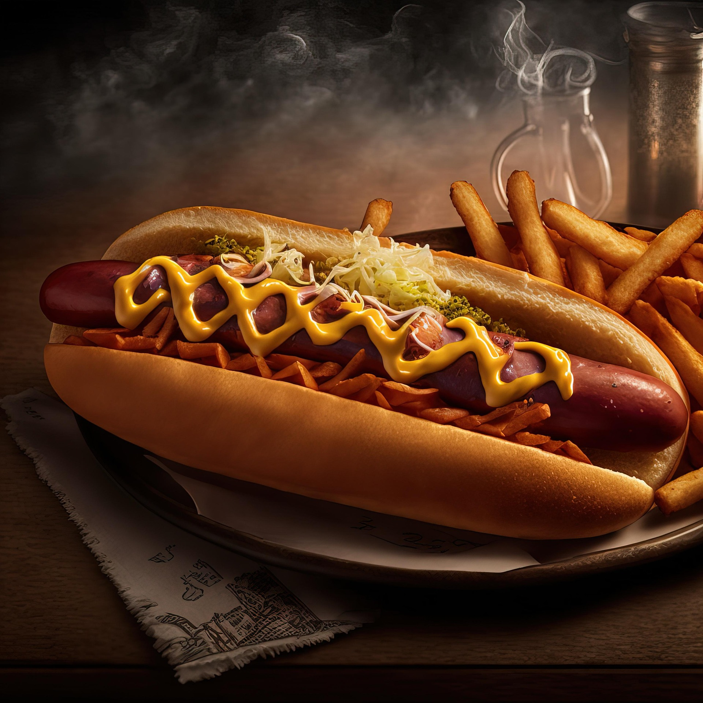

Hot Dog

El infaltable plato de la cocina rápida: una salchicha jugosa y dorada a
la perfección enmarcada en un pan suave y esponjoso, complementada con
cebolla en cuadritos, papas fosforito para el toque crocante y una
combinación de salsas que potencia cada bocado.
Ingredientes
- 4 panes para Hot Dog
- 4 salchichas tipo Frankfurt
- 1 taza de papas ruffles
- 1/2 cebolla blanca
- 1 cucharada de mantequilla
- Salsas tradicionales
Preparacion
-
Dora las salchichas en una sartén con un toque de mantequilla a fuego
medio durante 5 minutos, girándolas constantemente para que queden
parejas (o hiérvelas en agua por 3 minutos si prefieres una textura más
suave).
-
Calienta los panes al vapor o pásalos ligeramente por la misma sartén
donde doraste las salchichas para que absorban sabor y queden blandos.
-
Abre los panes por la mitad sin separarlos por completo y unta una capa
ligera de mayonesa en la base interna.
-
Coloca una salchicha en cada pan y añade por encima la cebolla picada y
el queso rallado (si lo usas, puedes llevarlo 1 minuto al horno para
fundir).
-
Corona con abundante papa fosforito para dar textura crocante y
distribuye las salsas en hilos sobre la superficie antes de servir.
Comida Rapida